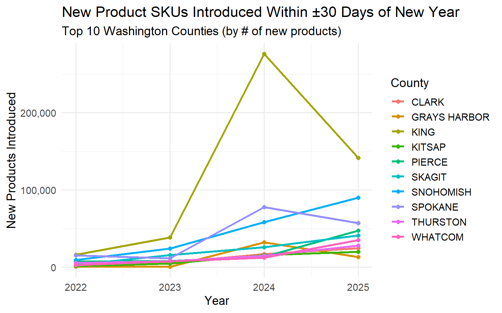

Novelty Meets Maturity in the Washington Cannabis Market
How Washington’s Cannabis Market Found Its Balance Between Innovation and Saturation (2021–2025)
CCRS
Cannabis
Novelty
Geography
4Years
The Bottom Line Up Front
Between 2021 and 2025, Washington’s cannabis market evolved from creative chaos to data-driven retail sophistication. “Novelty” is no longer just about new flavors or strain names — it’s about SKU efficiency, regional capacity, and consumer segmentation.
The state’s innovation curve now mirrors other mature retail categories: mass at the bottom, margin at the top, and variety in the middle.
Overview
From pre-rolls to live resin, Washington’s cannabis market has always thrived on novelty. But between 2021 and 2025, the pace and geography of product innovation shifted dramatically. Our CCRS dataset tracks new product introductions by county, showing how regional innovation, category saturation, and price competition evolved as the market matured.
Two visuals tell the story:
A word cloud of the most frequent product descriptors (2021–2025).
A rolling five-year plot of new product introductions by county.
Geography of Innovation
From 2021 to 2025, new product introduction rates rose sharply — but not uniformly. The visualization tracks top 10 Washington counties by number of new SKUs introduced within ±30 days of the New Year (a strong proxy for market-entry timing).
Key Observations
King County led early innovation, leveraging its dense retail ecosystem and vertically integrated brands.
By 2024, Grays Harbor and Skagit emerged as surprise leaders, likely driven by processor expansions and data normalization in CCRS reporting.
The 2024 spike — over 200,000 new SKUs introduced — coincides with CCRS compliance improvements and mass data inclusion, not just product creativity.
2025 saw normalization, with total introductions down ~40%, signaling saturation and a possible shift from expansion to optimization.
Category Performance and Emerging Trends
From your category_summary data (2021–2025), several consistent leaders and emerging formats define Washington’s product landscape:
| Category | 2025 Revenue | Price Trend | Key Insight |
|---|---|---|---|
| Concentrate for Inhalation | $1.75B | Stable ($17–19) | Volume growth with margin protection — consumer loyalty strong |
| Usable Cannabis | $1.57B | Flat ($18–19) | Commodity pricing sustained by branding and local loyalty |
| Solid Edible | $436M | Slight decline | Mainstream snack form; giftable, portable |
| Liquid Edible | $203M | Price down ($10–11) | Beverage entry-level category with lower per-unit margins |
| Hydrocarbon Concentrate | $61M | Price pressure | Overcapacity from 2024–2025 |
| Ethanol Concentrate | $49.8M | Up sharply | Boutique extraction methods gaining value status |
| Topical Ointment | $41M | Up ($17→$22) | Stable wellness niche with rising unit value |
Emerging Categories
Cannabis Mix Infused and Packaged Mix (combined $250M in 2025) mark a bridge trend: convenient, pre-balanced hybrid formats for casual users.
Suppositories, capsules, and transdermals remain tiny (<$5M combined) but hold outsized potential in wellness and medical segments.
Rolling Plot: New Products Per Year by County
We’ll focus on top 10 counties by new product counts for legibility.
Innovation as a Geographic Signal
The novelty surge in 2024 wasn’t random — it coincided with processor proliferation outside major metros:
Skagit and Grays Harbor counties showed unexpected innovation spikes, suggesting regional specialization.
Spokane and Snohomish maintained steady upward trajectories, signaling healthy secondary markets.
King and Pierce counties — the traditional epicenters — saw slower relative growth, implying innovation decentralization.
The data points toward a distributed innovation ecosystem, where rural processors contribute as much new product diversity as urban brands.

Product Language: What’s in a Name?
When you strip away brand names and focus purely on descriptors, the linguistic center of Washington’s cannabis market is clear: “flower,” “concentrate,” “disposable,” “prefilled,” and “ infused” dominate.
These terms reflect a convergence of two product logics:
The traditional horticultural core (“flower,” “strain,” “resin,” “preroll,” “cookie,” “rosin”, “concentrate”)
The consumer electronics overlay (“battery,” “cartridge,” “vaporizer,” “vape,” “all-in-one,” “prefilled,” “handheld,” “disposable,” “portable,” “thread”)
In other words, Washington’s market has become both plant-based and plug-based. The old dispensary culture of jars and scales now coexists with vape pods, disposables, and portable oil-based systems.
Even words like “bowl”, “pipe”, “smoke-able,” and “bong” still appear — relics of a pre-regulated, analog consumption era that remains embedded in brand storytelling.
Trendy words like “infused”, “flavor”, “trichome-enriched” appear in brands effectively acquiring a loyal customer base.
Commoditization vs. Premiumization
| Segment | Example | Market Behavior |
|---|---|---|
| Commodity Base | Flower Lot, Wet Flower, Unlotted Flower | Massive volume, <$2/unit, thin margins |
| Mid-Tier Engine | Concentrates, Packaged Mix, Edibles | Reliable unit growth, stable pricing |
| Premium Edge | Non-Solvent, Ethanol, Topicals | Low volume, strong pricing power |
Flower has officially entered commodity status — high volume, low differentiation. Meanwhile, premium extracts and wellness products show the opposite dynamic: modest growth but rising per-unit value, especially in solventless, CO₂, and ethanol-derived lines.
Looking Ahead
The convergence of product variety, compliance transparency, and category maturity indicates that by 2026:
SKU inflation will taper — fewer new products, more strategic portfolio management.
Flower and concentrate prices will stabilize as economies of scale settle.
Mid-market edibles and wellness products will dominate branding and licensing partnerships.
County-level innovation may shift toward formulation and co-packing, not just cultivation.